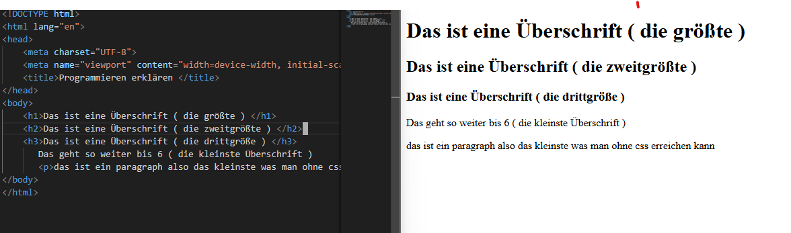
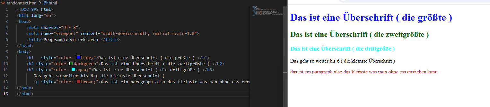

Zuerst geht man auf die seite : https://code.visualstudio.com/download. Nachdem man die datei geöffnet hat muss man sich nur noch die checkboxen nach interesse auswählen und das programm öffnen

HTML – Struktur der Website
HTML bildet das Grundgerüst der Website. Es ist wie ein Haus ohne Möbel und Strom. Hier werden Inhalte wie Texte und Bilder abgebildet.
In der Programmiersprache Html gibt es sowas wie Elemente sie sind für die defininierung von der art des Inhalts.
Elemente wie H1 bis p fügen Text von groß bis klein ein.
Es gibt aber auch Elemente wie img die einen zweiten tag brauchen um die quelle des bildes zu finden das ist meistens ein tag wie Href oder Src.
Dadurch bleibt die Website übersichtlich.
CSS – Design und Layout
CSS beschreibt ein html Element genauer z.b farbe oder ort.
Es ist wie ein Haus mit Möbel aber immernoch ohne Strom.
Dadurch lassen sich Farben, Größe oder Position ändern.
Dafür gibt es einen style tag der hinter dem text tag kommt, dadurch kann man dann einen neue sache einfügen z.b. wie color und so weiter was auf dem bild zu sehen ist.

JavaScript – Interaktivität
JavaScript fügt funktionen hinzu z.b. bei einem button, dass er bei einem klick einen text ändert.
Es ist wie ein Komplettes Haus mit Funktionen, Möbel alles was amn zum leben brauch.
Dazu gehören z.B. Klick-Events, Animationen oder das Verändern von Inhalten
ohne die Seite neu zu laden.
Hier ein Bsp. :
Dieser Text verändert sich durch JavaScript.
Fazit
Durch die Kombination von HTML, CSS und JavaScript kann eine moderne
und funktionale Website entwickelt werden.
Die klare Trennung von Struktur, Design und Logik ermöglicht eine einfache Erweiterung
und Wartung des Projekts.